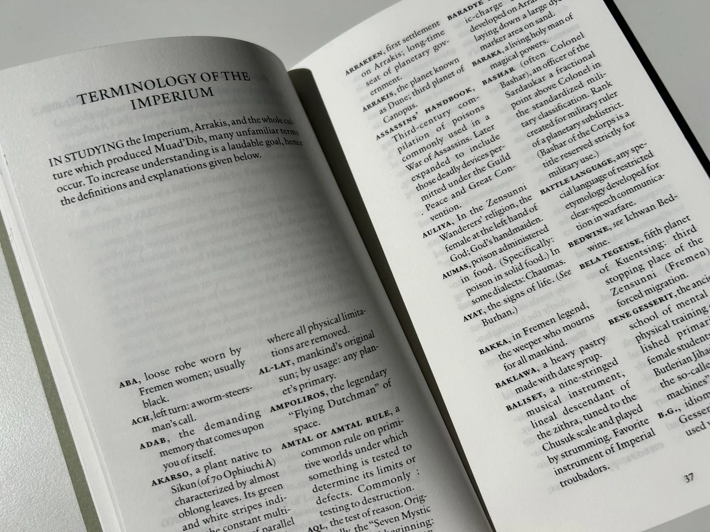
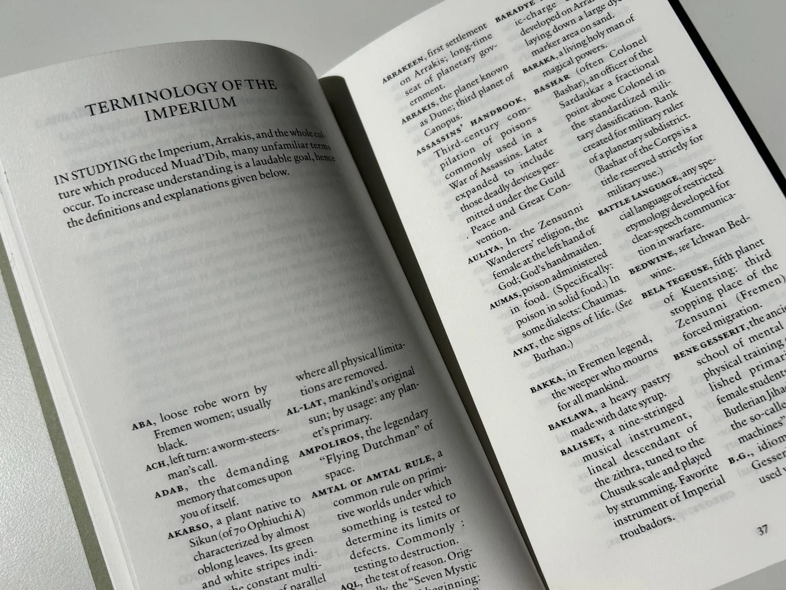

A redesign of Frank Herbert's 1965 novel Dune, with a specific focus on classic typesetting and refined typography.
Typeface — Verdigris MVB Pro Text
Paper — Bio Top 80g
Printer — KABK Computer Workshop
Publication
75 pages | 110 × 190 mm | English
The Hague, December 2024